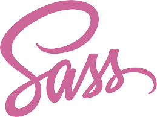

Skills
HTML
CSS
JavaScript

SASS

Bootstrap 5

Tailwind CSS

VueJs
NodeJs
Mongo DB
Responsive Webdesign
Accessibility
What does a geologist/environmental engineer, who is working as a chemist and lab technician AND just became a mother, do when she is "bored"?
Learns web development
Yes, You guessed right.. that "joke" is about me. Hi, I am Viktoria.
So how did I get to web development?
During maternity leave (2020-2021) between the lot of "gagagag gugugu bububu" and peekaboo, I needed something more to my brain.
I find web development as a room for everything I need. Problem solving, learning something new, improving creative thinking, room for development and of course tons of fun.
Random facts about me:
HTML
CSS
JavaScript
SASS
Bootstrap 5
Tailwind CSS
VueJs
NodeJs
Mongo DB
Responsive Webdesign
Accessibility
Own side project to help my family with expenses
The project is actually a CRUD application, where the user can add new "projects" and upload bills to track how much that particular project costs. The idea came from personal struggle. We are renovating our house and it is a nightmare to track how much we have spent for materials. My dream is that this app is going to help us to track our expenses for renovation better.
Used technologies:
JavaScript module exam project. SpaceRock is inspired by ESA SACF.
The project is actually a CRUD application mixed with some interesting geological topic about the analogue and simulant samples from the Moon. The user can search in the database and after registration and login the user can add new sample, modify and delete sample. It has a image upload feature as well.
Update - The original project had some glitch after the used Tailwind Element library were not compatible with the new version of Tailwind. Therefore I rewrote the project in a modern framework, namely Vue.
Used technologies:
This project was filled with challenges. You can read more about my "struggles" and solutions during making the first version here.

Front end module exam project. Bow's Cafe is inspired by Buens Cafe.
Buens Cafe is a local LGBT+ gathering place with friendly atmosphere. It is an important topic and therefore I decided to make this static webpage about them.
Used technologies:
The main challenges with this project was to implement my CSS and JavaScript rules with Bootstrap 5.
Want to see more? I have some other medium and small size side projects. To see them visit Github.